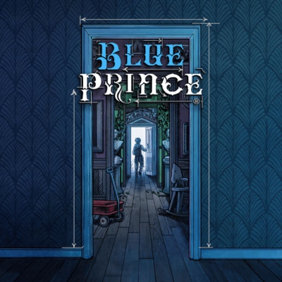

Spoiler Warnings Look Like This!
I’m a very big fan of games that fall under a weird sub-genre of Metroid-Vania that rely on knowledge as a form of progression. Games like Tunic and Outer Wilds are some of my favorite examples of this, and Blue Prince specifically is very interesting.
The structure of most video game worlds I would refer to as “static”: Levels that are predesigned and don’t change as the player explores. This approach makes sense for most genres and game worlds, and with Blue Prince, I would call “active”. Blue Prince’s manor is randomly structured between runs, with puzzles spanning across different rooms that may or may not be found on the same run. This sounds pretty bad, but it really is not, due in part to being able to juggle multiple puzzles at once, and also with how the player can improve at managing the room generation.
Obviously Blue Prince isn’t the first game do have random generation, Minecraft and literally every rouge-like have already done it, but I do really like its inclusion in a puzzle game. In the case of rouge-likes, the point is for the player to learn the game systems themselves as opposed to just memorizing levels and maps, but this approach to the manor causes the same effect. With the random generation, players instead now end up paying attention to the details that persist across runs.
Most rooms contain sketches of different things throughout the map, but are linked to the placement on the map as opposed to the specific room they’re in that lead to a puzzle.

Now most people have some warranted criticisms about the gameplay loop, and one I want to talk about is progression and how it balances how many different puzzles the player has to work with at once. The further the player progresses north in the house, the more locked doors they will face and the more items they will need to make meaningful progress.
Early in the game while the player is still learning the systems that the game uses, they will be stuck exploring the same pool of rooms. Naturally, players are going to focus on the puzzles that pertain to those specific rooms. As they improve their skills and solve those more simple puzzles, they will eventually be able to their way further north more consistently across runs and unlock more new rooms to explore and thus more puzzles.
Obviously with a game all about knowledge checks, it can demand a lot from the player and assumes they are very smart. This was definitely the case for me towards the end of the game where I thought I still needed information in order to finish the game, but ended up doing the side content and got lost.
I thought I needed to open up another pathway in the Rotating Gear room.
This may just be a problem I had, but overall many players has issues with trying to solve specific puzzles while fighting with the room generation while doing so. I imagine the intention was to encourage discovery and to help the player to find new puzzles and details, however it had the adverse effect of overwhelming players with information and being frustrating at points.
Overall, I did really enjoy this game and a lot of the ideas that it presents, especially its approach to side content. The “main story” is only at most ~⅓ of all the content in the game.